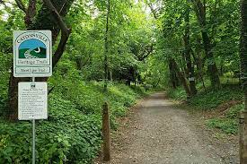
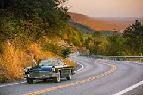

Number one of my list would have to be hiking or taking long walks, just to get my head together, to gather my thoughts and to sort of destress. Or one can say mentally declutter, I love to see the nature while I'm walking and breathe in the fresh air, the smell of fresh dew early in the morning and hearing the nature around you calms you and takes all the stress out in a diffrent way.
My next favorite thing to do is baking. For me baking is a very self-soothing activity, I have loved baking for a long time I am not like master chef level, but I do love to create new things. Usually when I'm too stressed out I just go into the kitchen see what I have that I can bake and create something new, that kind of helps me to destress. The thing I love apart of baking is decorating the things that I have baked, it is a diffrent kind of satisfaction when you decorate cookies and cakes. This is a picture of unicorn cake I attemped to make for my daughter's birthday.

Lastly, I love going on long drives either by my self or with someone else . There is an odd satisfaction that you get when take a long drive into thick wooded areas with the trees and the fresh smell of pine cones and greenery around you, its the best way to spend a day off from work or school or kids for that mattter. Me personally, I love driving to Pennsylvania( given there is not traffic, if there something I hate more than anything its sitting through traffic!!!!!). Pennsylvania has some really nice scenery, hilly areas and thick greenery areas as you drive by it feels so serene.
